A. Scientific question and conceptual framework
When does subsurface void geometry constrain a microbial cell?
A cell needs room to occupy a local void, a constriction large enough to cross, and a path that is connected at the relevant scale. Those are related observations—not interchangeable outcomes.
| Question | Evidence that can address it | Current interpretation |
|---|---|---|
| Accommodation | Pore-body diameter or a clearly defined pore-cluster/domain scale | Local geometric room for a cell; it does not prove entry, persistence, or transport. |
| Nominal transit | Pore throat, MIP entry equivalent, or a scientifically justified aperture | Local constriction fit; it does not prove a connected migration route. |
| Amount and connectivity | Total, connected or effective porosity; coordination; percolation; permeability; tortuosity | Reported as context. Hydraulic, solute, and cellular connectivity are not assumed equivalent. |
The project is data-first. It preserves the native radius/diameter convention, geometry class, method, weighting basis, specimen state, and observational window. It does not currently estimate habitability, colonizable porosity, connected habitat, or a universal clearance threshold. Fractures and matrix pores are separate geological systems: a low-porosity crystalline rock may still support fracture fluids or fracture-surface colonization, while a large pore body behind a small throat may not support cell movement.
B. Microbial geometry resource
A quality-controlled cultured-species baseline
M1 v1 is a species-level, quality-controlled geometry resource—not a universal microbial-size distribution. Its primary biological comparison population is 4,452 strict LPSN-supported cultured species with one canonical morphology record each.
| Resource stage | Count | Interpretive role |
|---|---|---|
| Bacteria / Archaea / domain unreported type-strain groups | 21,262 / 762 / 98 | Initial taxonomic resource; not all have geometry. |
| Strains with shape / normalized length / normalized width | 9,816 / 5,897 / 5,779 | Source-normalized morphology availability. |
| Normalized-width observations; with both axes in one observation | 5,849 / 5,600 | Observation-level evidence; multiple records are not silently averaged. |
| Eligible observations; explicit exclusions | 4,647 / 1,202 | Scientific QC analytical layer. |
| Species with canonical width; strict LPSN-supported species | 4,557 / 4,452 | Species-level primary baseline. |
Scientific QC retains source values, high-confidence overlays, and unresolved uncertainty rather than averaging incompatible morphology reports. It reviewed 1,288 suspect observations, made two high-confidence corrections, and retained 1,286 unresolved contexts. Taxonomy harmonisation reduced the apparent phylum/reporting association from Cramér’s V = 0.528 to 0.154: a useful warning that raw taxonomic patterns can be reporting artefacts, not biological geometry effects.
Width: the current transverse-dimension reference
Minimum, midpoint, and maximum widths are separate source-faithful conventions. For the 4,452-species strict layer, their medians are 0.55, 0.60, and 0.70 µm; their p5–p95 spans are 0.25–1.168, 0.30–1.25, and 0.35–1.40 µm. The current primary comparison draws canonical midpoint width, not the overall 0.60 µm median.
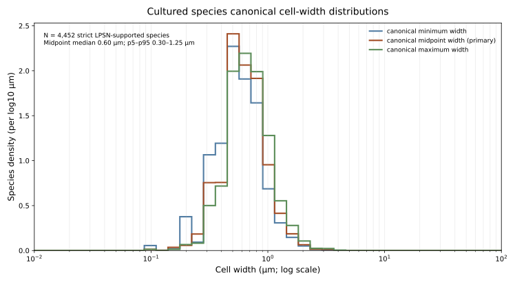
Length and descriptive simple-cell volume
Canonical length midpoint is available for 4,297 strict species: median 2.00 µm and p5–p95 0.85–6.00 µm. It is a related but distinct population from width, and its long reported upper tail is shown on a log axis rather than presented as a typical cell length.
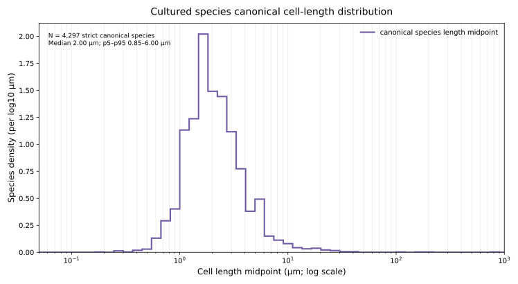
Equivalent single-cell volume is calculated only as descriptive occupancy context: 3,765 simple rods are treated as spherocylinders and 180 cocci/spherical cells as spheres (N = 3,945). For diameter d, a sphere uses V = πd³/6. For a rod with total end-to-end length L, V = π(d/2)²(L − d) + πd³/6. Complex/unresolved forms (345), records missing an axis (155), and seven L < d reports are excluded. Median volume is 0.509 µm³ and p5–p95 is 0.0871–3.47 µm³.
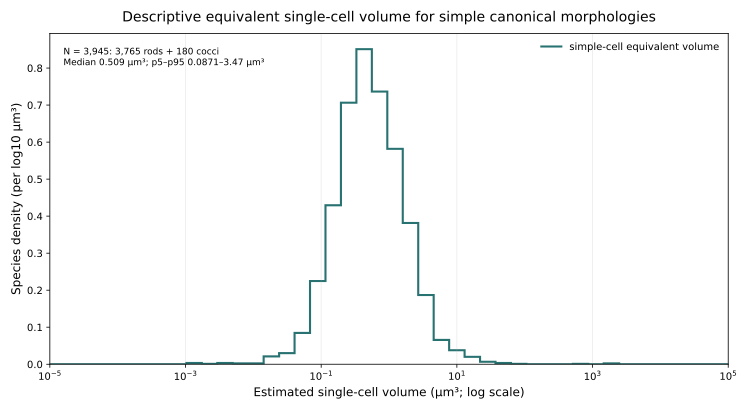
The baseline remains conditioned on cultivation, formal description, type strains, and recorded morphology. It is not an environmental, deep-subsurface, ultrasmall-cell, spore, or biofilm size distribution. Orientation, deformability, surface chemistry, attachment, growth state, and lineage-specific morphology remain outside the current comparison; M2 is the planned environmental/subsurface resource.
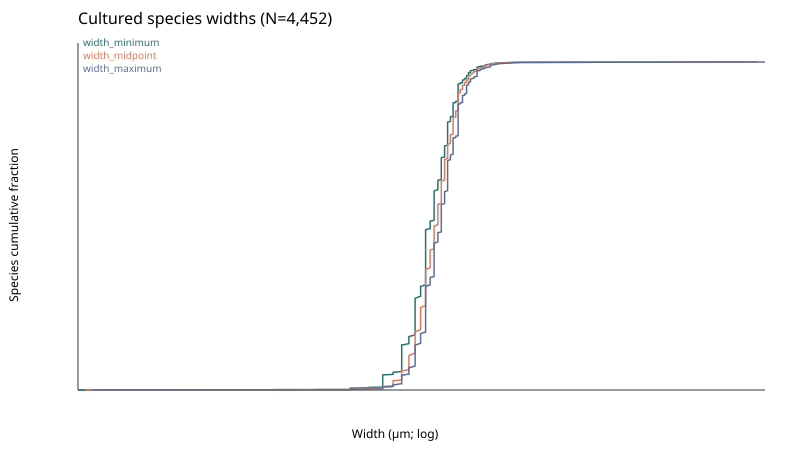
C. Geological geometry resource
Evidence is hierarchical: sources, settings, specimens, measurements, then objects
The detailed M3 resource contains eight publications/data releases and about 2.5 million geometry rows. The Literature Lithology Atlas adds broad published context: 40 independent records, 34 natural settings, and a conservative minimum of 272 primary specimens across nine high-level lithologies. The latter—not the object count—is the relevant scale for geological replication.
There are 345 long-form quantitative measurement rows: 214 Park & Santamarina parameter rows (107 fitted components) and 131 rows containing 151 explicit values from other selected literature. Park’s 83 benchmark groups remain explicitly grouped and provenance-labelled rather than being treated as raw pore observations.
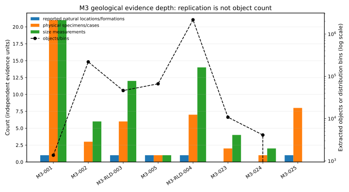
| Lithology | Sources | Natural settings | Primary specimens, minimum | Park & Santamarina groups, separate |
|---|---|---|---|---|
| Unconsolidated sand/sediment | 5 | 2 | 9 | 39 |
| Sandstone | 5 | 3 | 69 | 17 |
| Mudstone/shale | 5 | 5 | 96 | 4 |
| Carbonate | 5 | 3 | 5 | 23 |
| Basalt/volcanic | 5 | 5 | 11 | 0 |
| Granite/granitoid | 5 | 3 | 22 | 0 |
| Gabbro/mafic crystalline | 5 | 3 | 33 | 0 |
| Serpentinite/ultramafic | 5 | 7 | 15 | 0 |
| Metamorphic rock | 5 | 4 | 12 | 0 |
Geographic replication
The map uses every natural setting for which a source-supported exact coordinate, named locality, or regional location is available. Marker shape records coordinate precision. It is a map of geographic/geological replication, not a claim of exact GPS sampling for regional records. Laboratory packs and remoulded standards are retained in provenance but are neither counted nor plotted as natural field sites.
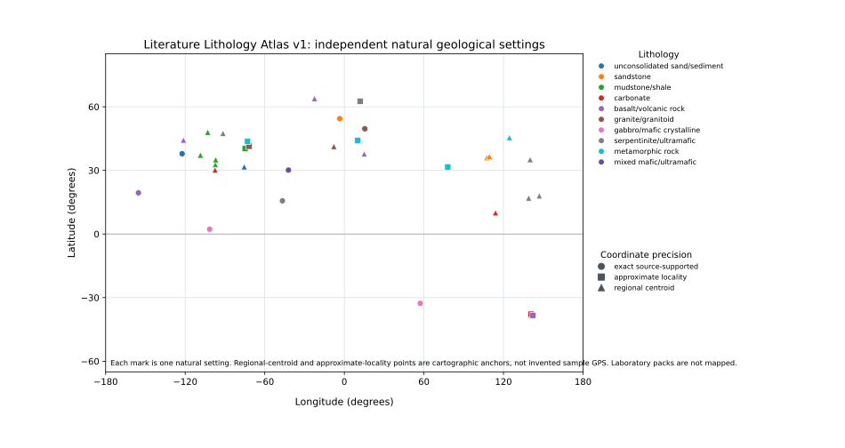
Porosity is an amount axis, not a substitute for geometry
Where the literature supports it, total and effective/connected porosity are kept separately. A single lithology-wide porosity median is not defensible for most classes because the compiled evidence consists of unequal sample groups, state mixtures, and different measurement definitions. The atlas therefore reports state-stratified observed/reference ranges; quartiles are intentionally blank unless at least four independent scalar source groups support an unweighted calculation.
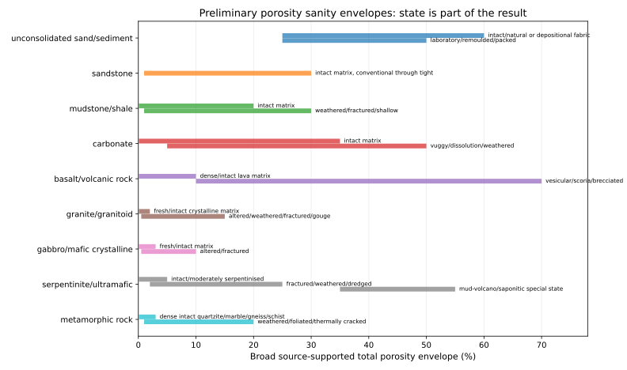
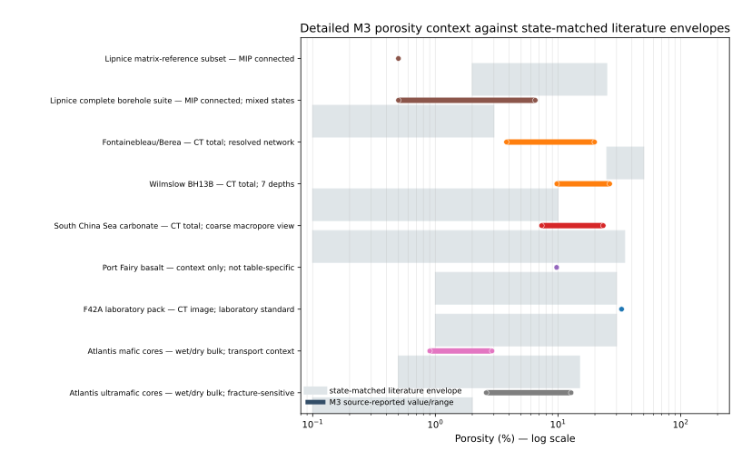
Void type and state are first-class fields
Reference envelopes now separate matrix/intergranular and intercrystalline pores, pore bodies, throats/entry constrictions, grain-boundary or reaction pores, microcracks, fracture-associated voids, vugs, and vesicles. A vug or vesicle is not a throat; a crack is not silently relabelled as matrix porosity. The figure is a compact published-reality layer, not a harmonised pore-size distribution.
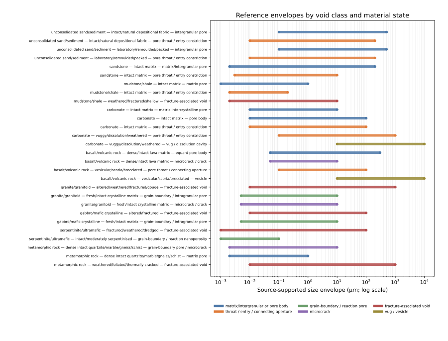
Quantitative literature observations: broad, but not falsely uniform
The atlas now contains 345 source-faithful quantitative rows and 365 explicit numeric values outside the detailed M3 object datasets. Park & Santamarina Supplementary Table S2 contributes 214 mean/standard-deviation parameter rows for 107 fitted pore-scale components in 83 named groups; these remain a separate benchmark layer with unresolved pore-body/throat semantics. Sixteen other selected publications contribute 131 rows, including 44 Kilauea Iki cores with separate helium- and water-accessible porosity. Neither a source-reported range nor a fitted component is inflated into multiple geological specimens or pores.
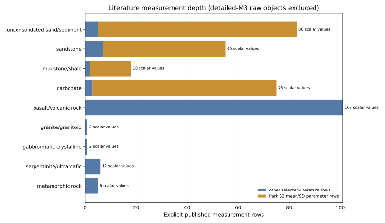
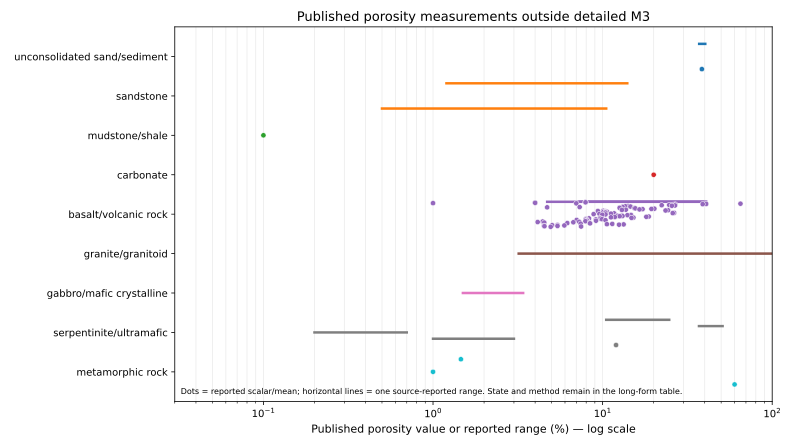
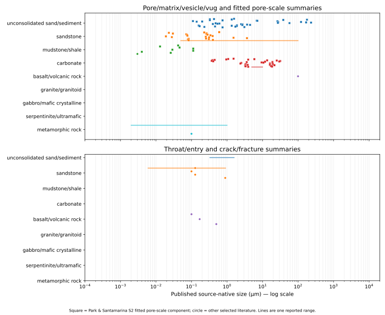
Detailed M3 exemplars: useful, but not lithology inventories
| Source | Audit classification | Report treatment |
|---|---|---|
| Lipnice granite MIP | Special geological state | One MEL-5 borehole. Seven matrix-reference specimens are separated from fractured, altered, cavity, fracture-surface, and gouge specimens. |
| Fontainebleau/Berea CT/PNM | Strongly resolution-conditioned; biased to large resolved voids | Resolved connected-network evidence at 0.74 µm voxels, not a complete sandstone pore or throat inventory. |
| South China Sea carbonate CT/PNM | Strongly resolution-conditioned; biased to large resolved voids; requires investigation | 61.75 µm-voxel macropore network only. Carbonate A workbook/paper throat discrepancy remains flagged. |
| Port Fairy basalt CT | Special state; strongly resolution-conditioned; biased to large resolved voids | 14.99 µm resolved pore-body population from one ungrooved half-core, not whole-rock dense-basalt geometry. |
| W23 shale | Requires investigation; special analytical construct | A modelled multiscale pore-cluster/domain geometry with microfracture connectivity, not a direct body or throat distribution. |
| Atlantis mafic/ultramafic cores | Transport/connectivity-only; ultramafic state-sensitive | Bulk porosity and pressure-dependent transport context only; no pore-size distribution is inferred. |
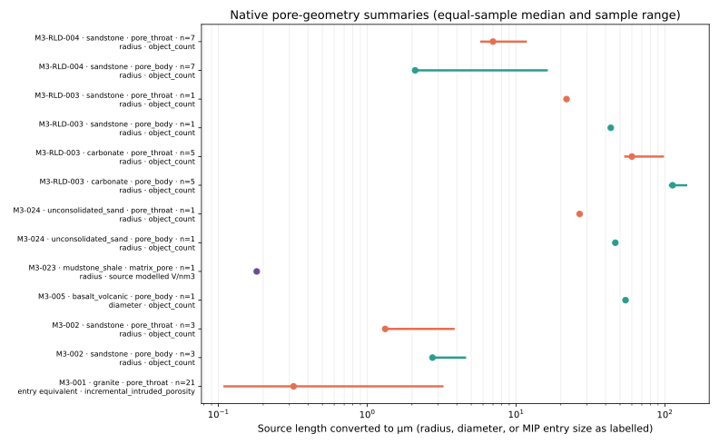
Resolution and detection windows belong in the interpretation: Fontainebleau/Berea 0.74 µm, Wilmslow 2.6860–2.8409 µm, F42A 9.996 µm, Port Fairy basalt 14.99 µm, South China Sea sandstone 30.45 µm, and South China Sea carbonate 61.75 µm voxels. CT/PNM object counts are normally object-count weighted; they are not pore-volume distributions and are lower-tail censored by segmentation and extraction.
D. Current scientific results and evolving interpretation
The first local-fit signal remains, but its meaning is now more sharply bounded
Fine pore and throat systems can overlap cultured microbial widths, while coarse CT/PNM networks often appear highly compatible because their unresolved fine tail is absent. The current result is not “pore size alone”: pore abundance × local geometry × connectivity are separate physical axes.
First: a deliberately narrow local-constriction experiment
The initial granite/sandstone analysis asked a local geometry question, not a habitat question. The renamed quantity conditional local size-fit probability, P(D ≥ W), is dimensionless and ranges from 0 to 1. W is a microbial species width drawn from the cultured species canonical midpoint-width distribution (one value for each of 4,452 species); it is not the overall microbial median of 0.60 µm. D is the source-specific comparison dimension—here an MIP entry-equivalent diameter or a documented throat comparison diameter. Geological weighting stays source-specific.
For Lipnice, the all-specimen equal-sample median P(D ≥ W) ≈ 0.387. In plain language: if one cultured species is sampled from the 4,452-species midpoint-width distribution and one MIP entry-equivalent size is sampled according to that specimen’s incremental-intruded-porosity weighting, the chance that the entry dimension is at least the sampled microbial width is about 0.387. This is conditional on the measured MIP entry-size distribution; it does not say that 38.7% of granite volume is accessible to cells.
Then: pore-space amount changed the interpretation
Across the 21 Lipnice specimens, P(D ≥ W) is 0.387 (0.237–0.695). The paired porosity-aware value has a different denominator: for each specimen it is the expected incremental MIP-intruded porosity fraction in entry-equivalent bins at least as large as a sampled canonical midpoint width, summed over bins and averaged over all 4,452 widths. Its equal-sample median is 0.714% (0.225–4.342%). It is not a threshold at 0.60 µm and not 38.7% of rock volume. In the seven matrix-reference specimens P(D ≥ W) has median 0.351; the remaining samples are fracture-, alteration-, cavity-, or gouge-associated. Conditional local geometry can therefore look substantial while compatible measured whole-specimen pore space remains small.
Then: the M3 panel exposed resolved-window bias
Fontainebleau/Berea’s 0.953 throat P(D ≥ W) is defensible for its resolved connected network, but not as a whole-rock sandstone estimate. F42A, South China Sea carbonate, Port Fairy basalt, and parts of Wilmslow similarly report large detected objects. A coarse CT result does not necessarily inflate total porosity—fine porosity is often missed—but the network geometry is necessarily conditioned on voids large enough to detect, segment, and extract. High size fit in those resolved populations can therefore be nearly non-informative about their unresolved microbial-scale lower tail.
| Dataset | Voxel size | Role | Current reading |
|---|---|---|---|
| Fontainebleau/Berea | 0.74 µm | Microbial-scale informative within the resolved network; still resolution-conditioned | Useful connected-throat evidence, not a complete throat inventory. |
| Wilmslow | 2.6860–2.8409 µm | Resolution-conditioned resolved-network geometry | Increasingly censored relative to cell scale; all-object throats also mix connected and disconnected objects. |
| F42A sand | 9.996 µm | Effectively non-diagnostic for the microbial-scale lower tail | Coarse resolved network; near-unity fit is expected from the window. |
| Port Fairy basalt | 14.99 µm | Effectively non-diagnostic for the microbial-scale lower tail | Resolved pore bodies, not dense-basalt whole-rock geometry. |
| South China Sea sandstone | 30.45 µm | Effectively non-diagnostic for the microbial-scale lower tail | Macropore-scale network view. |
| South China Sea carbonate | 61.75 µm | Effectively non-diagnostic for the microbial-scale lower tail | Macropore network only; current source discrepancy remains flagged. |
Now: the atlas supplies a broader geological reality check
W23’s numerical midpoint overlap (0.458 after an explicitly labelled 2R conversion) remains a modelled pore-cluster/domain accommodation result with microfracture-mediated connectivity—not a directly measured pore-body result and not throat transit. Literature benchmarks place intact shale matrix largely in nano- to submicrometre domains. Crystalline rocks can contain large cracks or fracture voids while retaining little total pore volume; Atlantis gabbro and ultramafic records remain transport/porosity context, not size distributions. The current interpretation is therefore pore abundance × pore geometry × connectivity, not pore size alone. No result estimates habitability, colonizable porosity, or connected microbial habitat.
E. Milestones and research evolution
A frozen roadmap and a cumulative scientific timeline
M1
Cultured microbial geometry baseline
Species-level Scientific QC established the strict-LPSN 4,452-species width resource.
Complete
M2
Environmental and subsurface microbial geometry
Direct in-situ counterpart to the cultured baseline.
Planned
M3
Matrix pore geometry
Reference Lithology Dataset v1 is complete; audit, atlas, and quantitative literature resource are under scientific review.
Complete v1 + review developments
M4
Fracture geometry
Cracks, apertures, fracture connectivity, coatings, and fracture-associated voids remain a separate resource.
Planned
M5
Microbial × geological geometry coupling
Preliminary proof of concept only; full coupling is not complete.
Preliminary
M6
Biosphera integration
Future integration of geometry, connectivity, and biological context.
Planned
Chronological research evolution
- The project established a species-level cultured baseline and tested whether morphology records could support a transparent width distribution. QC preserved uncertainty and showed that raw phylum patterns weakened after taxonomy harmonisation.
- Native MIP and PNM geometry were retained rather than collapsed into a universal pore-size variable. The first question was deliberately local: can a source-defined constriction be at least as wide as a cultured cell?
- Granite MIP and sandstone resolved-network throats supported the first C(k) and P(D ≥ W) calculations; other sources supplied native body, throat, and connectivity context without forced harmonisation.
- Accommodation, nominal transit, and connectivity were explicitly separated. The apparent large overlap in several CT/PNM datasets raised a scientific question rather than a conclusion.
- The team found that network objects were being mistaken for geological replication, and that state, porosity, cracks, and measurement windows changed the meaning of a distribution. Porosity was restored as a separate physical axis.
- Forty selected records, 34 settings, and state/void-class reference envelopes positioned detailed M3 exemplars against published geological reality rather than treating them as lithology priors.
- The atlas gained 345 long-form measurement rows and 365 explicit values. The current reading is that coarse resolved networks, special geological states, and fine matrix systems must be interpreted separately: pore abundance × local geometry × connectivity.
F. Methods and technical provenance
Source meaning, not a universal pore-size variable, organizes the resource
Raw third-party files remain immutable and local. The tracked atlas contains source metadata, source-faithful quantitative observations, exact source/table/figure locators, and safe derived summaries. The report builder uses an explicit figure allowlist; it does not publish raw datasets, row-level processed distributions, caches, or credentials. It now fails if an image referenced in the page is missing, not allowlisted, or was not copied into the public tree. It also checks that the frozen A–H sections and M1–M6 labels remain present, supporting the project’s cumulative-report rule.
Native measurements remain native. A separate comparison diameter is derived only when a source explicitly reports a radius (2 × radius) or already gives diameter; MIP entry-equivalent dimensions remain labelled as such. This analytical field never overwrites a source radius. Per-sample summaries preserve incremental-intruded-porosity, object-count, modelled-volume, or other documented weighting. Samples are not concatenated into a lithology distribution.
| Source family | Native quantity and weighting | What it can support | Primary limitation |
|---|---|---|---|
| Lipnice MIP | Entry/crack-equivalent bins; incremental intruded porosity | Connected MIP-accessible entry geometry and porosity-aware threshold summaries | Washburn idealisation; one borehole with state heterogeneity |
| CT/PNM | Segmented body/throat objects; normally object count | Resolved network geometry and topology | Voxel, segmentation, ROI, and extraction lower-tail censoring |
| Gas adsorption / MIP literature | Adsorbed or intruded volume; source-defined size convention | Fine matrix/entry-scale context | Method-specific window and model convention |
| Microscopy/nanotomography | Image object/area/volume metrics | Local pore class, grain-boundary, reaction, or crack geometry | Local analysed volume; scale-dependent representativeness |
| Transport-only sources | Bulk porosity, permeability, resistivity, coordination or formation factor | Connectivity/transport context | Not a pore-body or throat-size distribution |
Technical diagnostic figures
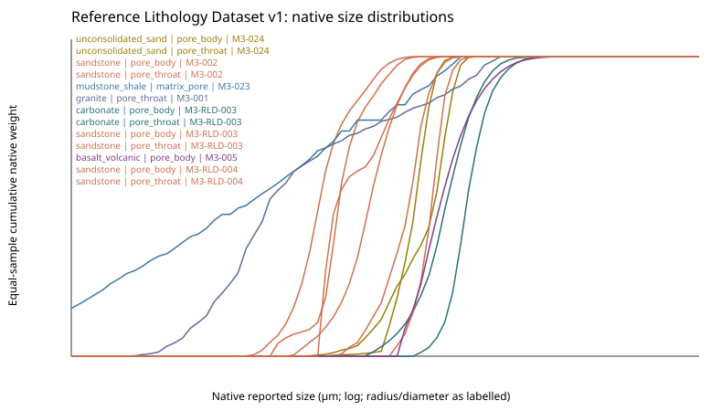
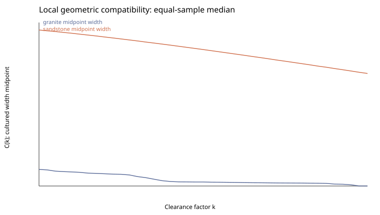
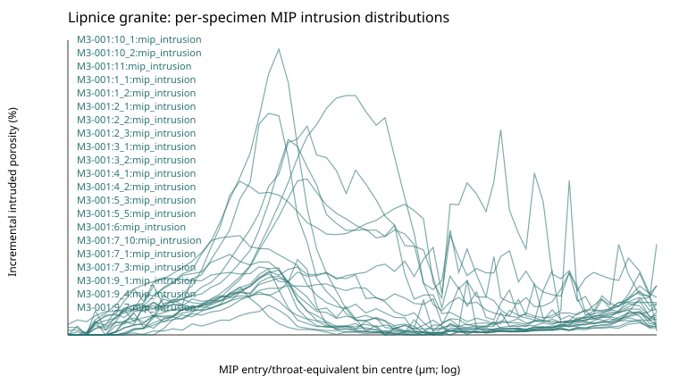
G. Limitations and open questions
What the resource cannot yet say
- The atlas is a bounded reality check, not a meta-analysis or lithology prior. Quantitative depth is dominated by Park & Santamarina fitted parameters and a Kilauea porosity table; direct published scalar geometry remains sparse for fresh granite, gabbro, and several metamorphic materials.
- Broad reference envelopes are not pooled distributions, universal constants, or confidence intervals. They provide state- and void-class-specific checks on interpretation.
- CT/PNM sources are lower-tail censored. Object-count distributions cannot be interpreted as pore-volume distributions or complete pore inventories.
- South China Sea carbonate A retains an unresolved workbook/paper throat-count and maximum-radius discrepancy. J24 lacks a resolved physical radius unit. Port Fairy table-specific bulk porosity is unavailable.
- Whole-rock porosity-aware compatibility is currently defensible only for MIP. CT/PNM requires source-supported connected, volume-weighted accounting before a parallel quantity can be claimed.
- The microbial resource remains a cultured-species baseline. Environmental/subsurface cell dimensions, dormancy, deformation, orientation, biofilm state, and physiological interactions are not yet modelled.
- Fracture aperture, persistence, coatings, fillings, and cellular-scale connectivity require a dedicated fracture resource; fracture-associated voids must not be repackaged as matrix porosity.
H. References and resources
Traceable evidence, with raw data kept private
The canonical reasoning is maintained in the repository’s Scientific Framework and cumulative-report rule, M1 geometry resource v1, M3 Geological Resource Audit, Literature Lithology Atlas v1, Literature Quantitative Measurements v1, and provenance records. Those review-state documents will receive public repository links only when the scientific review is frozen on main; this draft deliberately does not point readers to non-existent public paths. The already published Microbial Scientific QC report remains available as the M1 source record.
The external benchmark is Park & Santamarina (2020). The atlas source register provides the persistent identifiers, source roles, localities, methods, geometry definitions, and exact table/figure provenance for all 40 selected records. Detailed M3 source pages include Lipnice MIP, Fontainebleau/Berea PNM, South China Sea carbonate PNM, Harvard shale, and Atlantis Massif transport data.